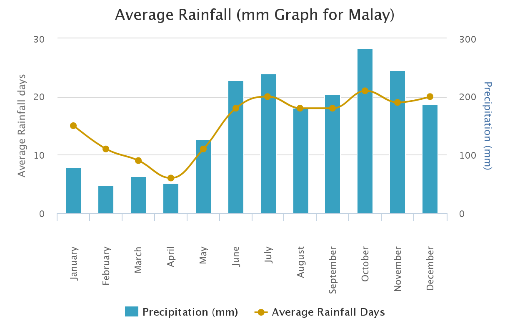

지역특징
연간 평균 기온
연간 평균 강수량
기타
≫연간 평균 기온
▲
≫연간 평균 강수량
수제비누로, 아토피나 여드름피부에 좋다.

▲
≫기타
발전소가 없다보니 발전소가 있는 섬에서 전기를 끌어다 쓰는데 섬은 작고 인구밀도는 높아 섬 전체에 정전이 흔하게 발생한다.
사실 필리핀의 전력 사정 자체가 아주 좋은 편은 아니다. 드물지만 공항도 정전이 된다.
▲